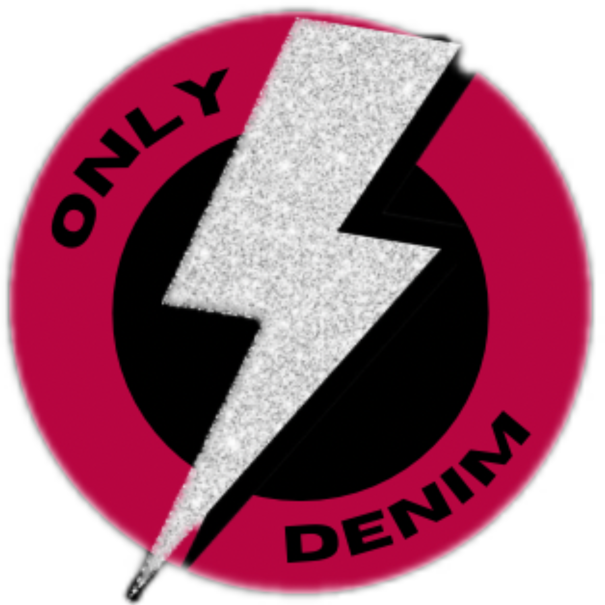

NUESTRA HISTORIA
Only-Denim nació de nuestra pasión compartida por la moda, somos Sol y Juana, dos hermanas, que siempre soñaron con emprender juntas. Desde pequeñas, compartimos un amor por las prendas de ropa y tendencias, especialmente por los jeans, una prenda esencial en cualquier guardarropa.
Con el tiempo, ambas seguimos caminos profesionales distintos pero complementarios: Juana se especializó en diseño de modas, mientras que Sol se dedicó al negocio y la gestión de empresas. A pesar de las diferencias, la visión de crear algo juntas siempre se mantuvo en pie.
Un día, conversando de nuestras metas y sueños, nos dimos cuenta de que teníamos la motivacion y combinación perfecta de habilidades para hacer realidad este gran deseo. Así nació Only-Denim, una marca dedicada a la confección de prendas basadas en jeans de alta calidad, con diseños únicos que combinan estilo, comodidad y sostenibilidad.
Desde el inicio, trabajamos mano a mano, cuidando cada detalle del proceso, desde la selección de materiales hasta la atención al cliente. El objetivo de Only-denim es ofrecer no solo un producto, sino una experiencia que refleje la pasión y el amor que ponemos en cada pieza.
Hoy, Only-Denim es mucho más que una marca; es el resultado de la unión de dos hermanas que, con esfuerzo y dedicación, lograron vencer sus miedos, cruzar los limites y ofrecer a sus clientes prendas unicas en el mercado con la intencion de que se sientan bien al usarlos.